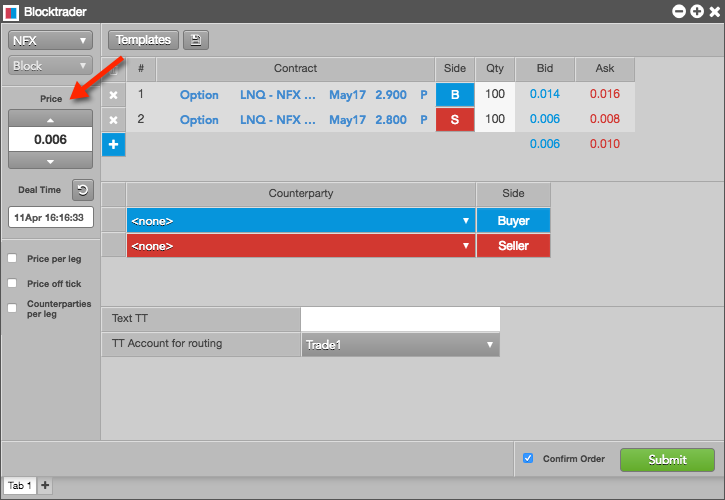
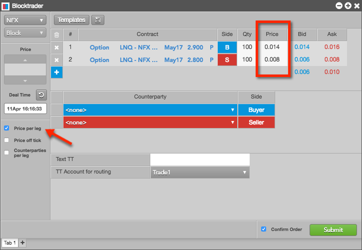
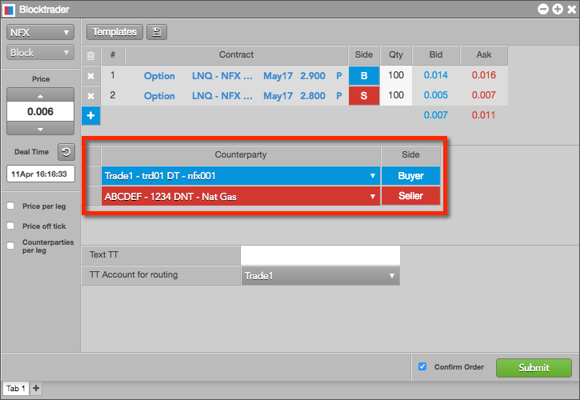
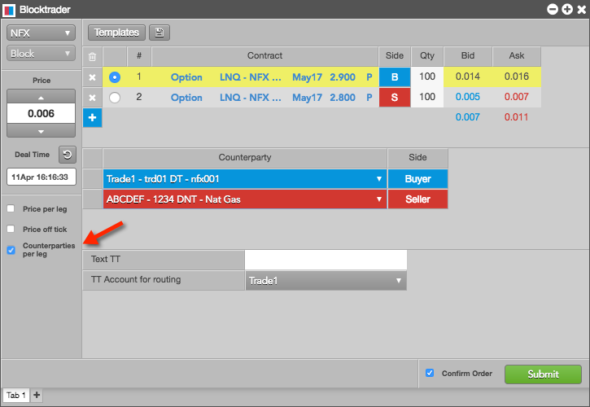
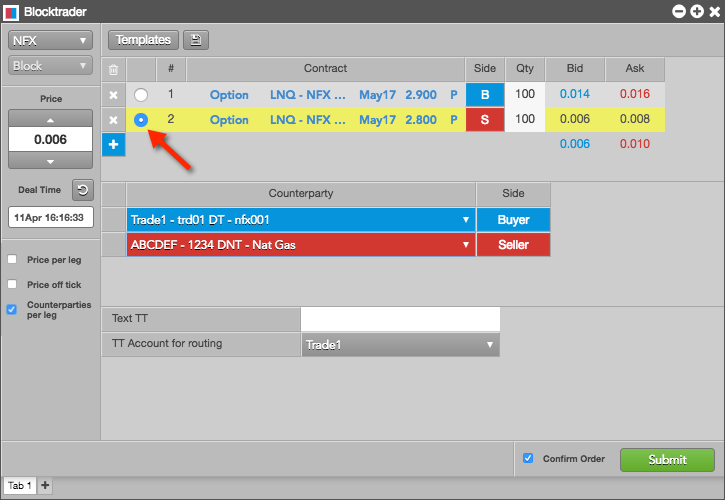
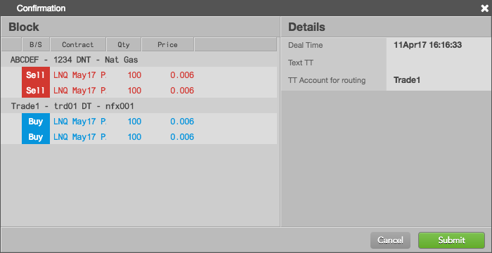

Use the Blocktrader widget to submit block trades for multiple accounts and counterparties at the NASDAQ Futures Exchange (NFX) and the NASDAQ Commodities and Derivatives Exchange (NDAQ_EU). As an executing broker, you can select a counterparty and account for each side of the trade and submit both sides at once.
You can also create synthetic strategies to allocate multi-legged block trades in the order ticket of the Blocktrader widget. All legs of the strategy are sent to the exchange as separate trades. Strategies can be saved as templates and used for submitting additional block trades.
Once a trade is executed, you can view the fills and order status for each leg in the Blocktrader trade log, which is located in the bottom half of the widget. The orders and fills are also displayed in the Fills and Audit Trail widgets. Block trades can also be viewed in the Time and Sales widget.
Blocktrader display for NFX and NDAQ_EU Block Trades
Blocktrader consists of the components needed for submitting Block trades on NFX and NDAQ_EU.

The image shows the following:
- Exchange selector — Lists the exchanges with OTC trade reporting supported on TT®
- Trade type selector — Lists the OTC trade types supported for the selected exchange.
- Price — Used for entering a price for the transaction. You can also use the up and down arrows to set the price.
- Deal Time — Used for setting the time of the transaction.
- Price per leg — When checked, allows you to enter a price per leg instead of a single price for the entire transaction.
- Price off tick — When checked, allows you to enter an off tick price per leg for instruments that support tick sizes smaller than what is displayed.
- Counterparties per leg — When checked, allows you to select a counterparty per leg in addition to one for each side.
- Templates — Lists saved leg definitions that can be used as templates for defining and submitting additional trades. Click the icon to save the leg definition.
- Leg definition grid — Consists of the following:
- Instrument picker: Allows you to search for or manually select an exchange, product, and instrument in the Contract column.
- Side column: Allows you to select the side of the trade for each leg. A single click in the Side column toggles a leg to the opposite buy/sell direction.
- Qty column: Allows you to enter the buy or sell quantity for the leg.
- Bid and Ask columns: Displays the best bid and ask prices for the contract.
- Net sum values: Displays the net sum of the best bid and ask prices for each leg of the transaction.
- Add/delete column: Allows you to delete all legs or add/delete individual instrument legs. Click "x" to delete a leg, and "+" to add a leg.
- Counterparty selection grid — Consists of the following:
- Counterparty column: Allows you to select an account and counterparty for each side of the trade. The counterparty selection shows your account, the counterparty's alias (e.g., FCM name), and the counterparty's Authorized Trader ID (ATID) or alias.
- Side column: Allows you to set the counterparty's side of the trade. A single click in the Side column toggles a leg to the opposite buy/sell direction.
- Text TT — Allows you to add a text that is not sent to the exchange but remains on the order in the TT system.
- TT Account for routing — Allows you to select an account that has been assigned to you and mapped to an active connection to the exchange.
- Confirm Order and Submit — Displays the trade confirmation window when you click Submit to send the trade to the exchange. Order confirmations are enabled by default.
Submitting NFX and NDAQ_EU BLock Trades
Use the Blocktrader widget to submit over-the-counter (block, off-exchange, wholesale, etc.) transactions supported by the exchange and market that you are trading.
To submit an NFX block trade:
- Click Widgets in the workspace title bar and select Miscellaneous | Blocktrader.
- In the open Blocktrader widget, click the exchange selector and select an exchange (e.g., NFX).
- Click the trade type selector and select a transaction type (e.g., Block).
- Select a contract for each leg of the transaction using the instrument picker.
- Enter a quantity and select a side for each leg.
A single click in the Side column toggles a leg to the opposite buy/sell direction.
- In the Price field, set a price for the transaction.

If needed, you can click Price per leg to set the price for each leg of the trade.

Note: For instruments that support tick sizes smaller than what is displayed, you can check Price off tick to enter an off tick price per leg.
- Set the transaction time for the trade.
- Using the Counterparty selection grid, do the following:
In the Counterparty column, select a counterparty for each side of the trade.
Use the drop-down arrows in the counterparty fields to select the appropriate buy and sell accounts. Enter a few characters in the search field to quickly find the entry you need.
In the Side column, set whether the counterparty is the buyer or seller. A single click in the Side column toggles a leg to the opposite buy/sell direction.

To select a counterparty for each leg of the trade, click Counterparties per leg.

If selecting a counterparty per leg, click the radio button next to a contract leg in the order ticket, then select a counterparty in the Counterparty column for each leg.

- Click the TT account for routing selector, and select an account.
The accounts listed are assigned to you in the Setup application and have active connections to the exchange.
- Optionally, enter a value in the Text TT field.
This field is not routed to the exchange, but the value remains on the order in the TT system.
- Click Submit.
The Confirmation screen appears.

Note: Blocktrader prompts you to confirm orders by default. Uncheck Confirm order on the Blocktrader widget to disable order confirmations.
- Confirm the order and click Submit.